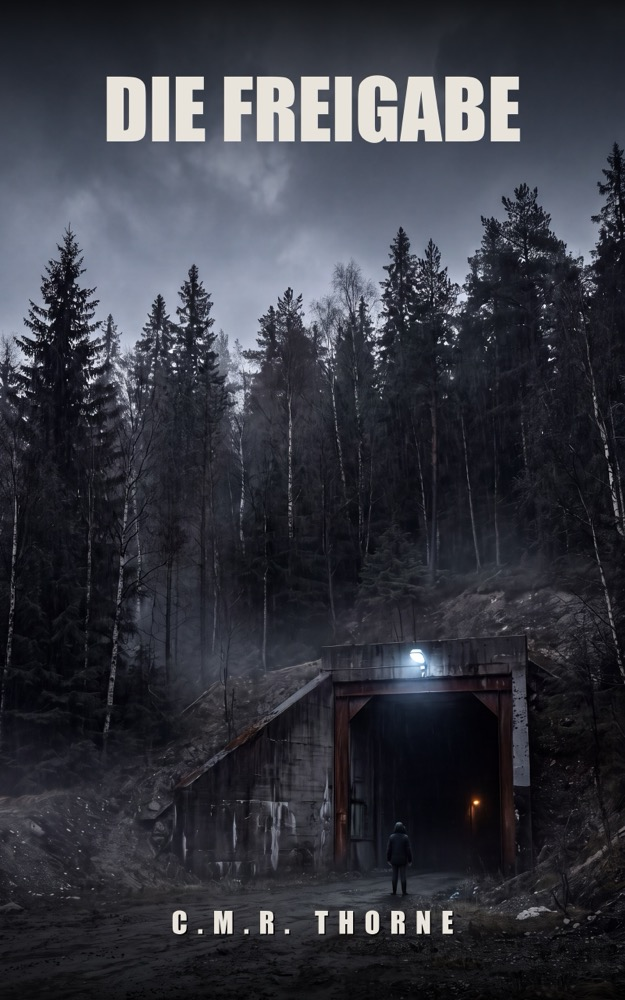

LOWLANDSPRESS
LOWLANDSPRESS

Die Freigabe
Ein Thriller
Fünf Tote. Eine gefälschte Unterschrift. Und ein Fall, der acht Jahre begraben blieb.
Wo erhältlich
Fünf Bergleute sterben, als ein Stollen einstürzt. Die offizielle Version: eine Naturkatastrophe, die niemand hätte kommen sehen.
Dann bekommt Sicherheitsberater Simon Kessler das Freigabedokument von jenem Morgen zu Gesicht – mit seiner eigenen Unterschrift. Nur: Er hat es nie unterschrieben. Und es wurde nach dem Einsturz erstellt.
Während Simon herausfindet, wer seinen Namen gefälscht hat, taucht ein Fall auf, den er vor acht Jahren begraben hat. Jeder im Dorf hatte einen Grund zu schweigen. Auch er.
Ein Psychothriller über Zahlen, die nicht lügen, Menschen, die es tun, und den Preis einer einzigen Unterschrift.
Produktdetails
- Verlag
- Lowlands Press
- Sprache
- Deutsch
- Erschienen
- 2026-08-15
- Seiten (Taschenbuch)
- 478
- Seiten (Hardcover)
- 376
- ASIN (E-Book)
- B0HFD4R1CR
- ASIN (Taschenbuch)
- B0HHTFNBJT
- ASIN (Hardcover)
- B0HHTKSKBZ
- ISBN (Hardcover)
- 979-8171952754
Der Anfang
Der Anfang des Buches, dieselben Seiten, die ein Shop zum Hineinlesen zeigt. Weiterlesen bei den Händlern oben.
Prolog
12. September 2019
Der Stollen riecht nach nassem Stein und neuem Eisen. Die Geologin zählt ihre Schritte, aus Gewohnheit, nicht weil es sein muss. Achtundsechzig Meter von der Station. Über ihrem Kopf hängt der Berg – vierhundert Meter Berg, um genau zu sein, und genau ist das Einzige, was sie sein will, hier unten, wo alles, was man mitnimmt, eine Entscheidung ist und alles, was man vergisst, ein Risiko.
Auf ihrem Tablet steht die Freigabe von gestern. Grüner Haken. Wasserdruck innerhalb der Bandbreite. Mikroseismik ruhig. Betreten zur Probenahme gestattet, höchstens vier Stunden. Darunter die Unterschrift von jemandem, den sie mag, weil er Fragen so stellt, wie sie sie stellt: erst die Zahl, dann die Meinung.
Die Zahlen sind grün. Sie hat sie heute Morgen noch angesehen, oben, beim Kaffee, der nach Becher schmeckt. Grün, grün, grün.
Und doch.
Sie geht am ersten Messpunkt in die Hocke und legt die Hand an das Gestein, wozu es keinen Grund gibt, kein Protokoll verlangt es. Die Wand schwitzt. Das tun Wände hier, das ist normal, Sole sucht sich immer einen Weg. Aber es ist mehr Schweiß als letzte Woche, und letzte Woche war es mehr als in der Woche davor, und in ihrem Notizbuch – dem echten, dem aus Papier, mit den Bleistiftkolonnen, die niemand liest – steigt diese Reihe schon den ganzen Sommer, während die Berichte weiter sagen, dass nichts ist.
Sie hat es gestern noch angesprochen, oben. Beiläufig, im Gehen, so wie man etwas fragt, von dem man hofft, dass es dumm ist. Man schaue sich das an, hieß es. Die Sensoren dort übertreiben, hieß es. Das sagen hier alle: Die Sensoren übertreiben. Als hätte der Berg einen Hang zum Drama und die Menschen nicht.
Sie schreibt den Wert des Handmesspunkts in ihr Buch. Bleistift, Kolonne, Datum. Die Zahl ist zu hoch. Nicht gefährlich zu hoch, sagt der Bericht in ihrem Kopf. Einfach zu hoch, sagt das Buch in ihrer Hand.
Weiter vorn, wo der Stollen sich zum Versuchsfeld verengt, tickt etwas. Sie lauscht. Tropfen. Schneller als gestern? Sie ist nicht sicher. Das ist das Elende am Messen: Der Körper ist ein schlechtes Instrument und das Herz ein noch schlechteres, und deshalb vertraut man hier unten auf Sensoren – Sensoren, die übertreiben, heißt es – und auf Berichte, in denen die Zahlen glatt und ruhig daliegen, wie Zahlen es in Wirklichkeit nie tun.
Keine echte Messung ist so schön, denkt sie. Einmal hätte sie es fast laut gesagt, vorgestern, oben, am Kaffeeautomaten, zu dem Einzigen dort oben, der nach Rohdaten fragt, als wäre es ein Recht. Ich sehe es mir an, sagte er. Morgen fragt sie noch einmal. Laut, und mit dem Buch dabei.
Sie richtet sich auf, klopft sich den Grus von den Knien und geht ins Versuchsfeld.
Die Lampe an ihrem Helm nimmt die Dunkelheit nicht weg; sie schiebt sie nur ein paar Meter vor sich her, und die Dunkelheit wartet geduldig, bis sie vorbei ist, und schließt sich dann wieder hinter ihrem Rücken. Sie nimmt Hammer und Beutel. Proben nehmen ist ehrliche Arbeit: Der Stein lügt nicht, der Stein ist, was er ist, man schlägt ihn los, und er erzählt einem in der Hand die Wahrheit von dreihundert Millionen Jahren.
Der erste Beutel. Der zweite.
Bei der dritten Probe hört sie es.
Kein Ticken. Kein Tropfen. Ein Seufzer – als ändere der Berg irgendwo sehr tief die Haltung, ein Schläfer, der sich umdreht. Sie steht vollkommen still, den Beutel in der Hand, und lauscht mit allem, was sie hat, und das Geräusch kommt nicht zurück, und das ist schlimmer.
Erst dann sieht sie auf den Boden.
Das Wasser steht ihr um die Knöchel. Eben stand es noch nicht da. Es gab keinen Moment, in dem es kam; es ist einfach da, schwarz und entschlossen, und es zieht an ihren Stiefeln, als hätte es Eile, und irgendwo hinter der Wand, wo nie ein Mensch gewesen ist, wird ein Geräusch geboren, das sie noch nie gehört hat und doch sofort erkennt, weil es das einzige Geräusch ist, das hier unten jeder sein Leben lang erwartet.
Sie rennt.
Achtundsechzig Meter, denkt sie. Sie hat sie gezählt. Sie zählt sie wieder, jetzt in die andere Richtung, und das Wasser zählt mit, schneller, und die Lampe an ihrem Helm springt über die Wände, und die Wände bewegen sich mit, auf eine Art, wie Stein sich nicht bewegen darf.
Die Zahlen waren grün. Jemand hat sie angesehen. So funktioniert es doch – dafür gibt es die Berichte, dafür gibt es die Unterschriften, dafür stehen Namen unter Dokumenten: damit man rennen darf, ohne zweifeln zu müssen, ob einem jemand die Wahrheit gesagt hat.
Bei Meter vierzig steht ihr das Wasser an den Knien, und der Stollen übernimmt ihre Beine.
Bei Meter dreißig denkt sie nicht mehr in Metern.
Sie denkt an das Buch in ihrer Brusttasche, an die Bleistiftkolonnen, die schon den ganzen Sommer steigen, und daran, wie sie morgen – morgen – die Frage stellen würde, die sie heute hätte stellen müssen, und einen Augenblick lang, zwischen zwei Schlägen des Wassers, ist sie nicht ängstlich, sondern wütend, eine kurze, weiße, vollkommen klare Wut: Der Berg hat es gesagt. Den ganzen Sommer schon. Jemand hat etwas anderes daraus gemacht.
Das Licht ihres Helms streift die Decke, ein einziges Mal, wie ein Finger, der nach oben zeigt.
Sie war nicht die Erste, die zu spät begriff, dass die Zahlen logen.
Und sie würde nicht die Letzte sein.
Kapitel 1
Vierzig Tage nach dem Einsturz schoben sie das Papier über den Tisch, und Simon Kessler erkannte seine eigene Unterschrift, wie man in einer Menschenmenge einen Toten erkennt.
„Lassen Sie sich ruhig Zeit“, sagte die Frau von der Arbeitsinspektion. Sie hieß Van Roon und hatte die Art Geduld, die man sich in Räumen wie diesem antrainiert. Neben ihr saß ein Kriminalbeamter, der Boersma hieß und bis jetzt hauptsächlich geatmet hatte.
Der Vernehmungsraum lag in Assen, zweiter Stock, Blick auf ein Parkdeck. Auf dem Tisch standen zwei Becher Wasser, die niemand angerührt hatte. Simon hatte seinen Anwalt neben sich, einen Mann namens Verweij, der ihm vorab einen einzigen Rat gegeben hatte: Antworte auf die Frage, nicht auf die Stille danach.
Er sah auf das Papier.
BETRETUNGSFREIGABE – V-0319-07Z. Norlith Resources, Grube Zwartsloo, Feld 7-Zuid. Datum: 19. März 2027. Uhrzeit: 07:40. Ergänzende Messung 07:30 vor Ort durchgeführt: Wasserdruck innerhalb der Bandbreite, Gasspektrum ohne Auffälligkeiten, Betreten gestattet. Und darunter, in den blauen Pixeln des Systems: dig. signiert – S. Kessler, externer Sicherheitsberater.
„Erkennen Sie dieses Dokument?“, fragte Van Roon.
„Ich erkenne das Format. Es ist eine Freigabe aus unserem eigenen System.“
„Unserem?“
„Dem System von Norlith. Ich sage ‚unser‘ aus Gewohnheit. Ich habe zehn Jahre für Norlith gearbeitet.“
„Und die Unterschrift?“
„Das ist meine digitale Signatur“, sagte Simon. „Und ich habe dieses Dokument nie gesehen.“
Boersma bewegte sich zum ersten Mal. Er beugte sich vor, als hätte der Satz einen Geruch. „Sie erkennen Ihre Unterschrift unter einem Dokument, das Sie nie gesehen haben.“
„Ja.“
„Das erklären Sie mir mal.“
„Das kann ich nicht erklären. Deshalb sitze ich hier, nehme ich an.“
Verweij schob seinen Stift einen Millimeter zur Seite. Ruhig, hieß das.
Van Roon drehte das Papier eine Vierteldrehung zu sich. „Herr Kessler, ich sage Ihnen jetzt, was dieses Dokument besagt, und dann sagen Sie mir, was daran nicht stimmt. Es besagt, dass am 19. März um halb acht Uhr morgens am Feld 7-Zuid eine ergänzende Messung durchgeführt wurde. Vor Ort. Es besagt, dass die Werte in Ordnung waren. Es besagt, dass daraufhin das Betreten freigegeben wurde. Drei Stunden später stürzt Feld 7-Zuid ein, und fünf Männer ertrinken im Schlamm. Und unter alledem steht Ihr Name.“
„Es stimmt gar nichts daran.“
„Fangen Sie irgendwo an.“
„Es gab an dem Morgen keine ergänzende Messung um halb acht. Nicht von mir. Ich stand am 19. März um halb acht in meinem Büro in Zwolle, hundert Kilometer entfernt. Mein Vertrag mit Norlith war siebzehn Tage vorher auf Eis gelegt worden. Ich hätte das Gelände nicht einmal betreten dürfen.“
„Wer hat die Messung dann durchgeführt?“
„Niemand, denke ich.“
„Niemand“, wiederholte Boersma.
„Ich denke, dass diese Messung nie stattgefunden hat. Ich denke, dass jemand sie aufgeschrieben hat.“
Einen Moment blieb es still. Auf dem Parkdeck suchte ein Auto in drei Zügen eine Lücke, die zu klein war.
„Wer schreibt denn eine Messung auf, die nicht gemacht worden ist?“
„Das weiß ich nicht.“
„Versuchen Sie es mal.“
„Nein“, sagte Simon. „Ich habe zwanzig Jahre lang gelernt, nicht auf Papier zu raten, an dem Menschenleben hängen. Damit fange ich heute nicht an. Ich kann Ihnen sagen, was ich weiß: Diese Messung ist nicht von mir, und ich war nicht dort.“
„Das ist eine gewagte Behauptung“, sagte Van Roon. „Sie sagen: Dieses Dokument ist gefälscht.“
„Ich sage, dass ich es nicht erstellt habe und dass die Messung darin nie durchgeführt wurde. Welches Wort Sie dafür wählen, überlasse ich Ihnen.“
„Das System zeigt, dass die Freigabe unter Ihrer Autorisierung angelegt wurde. Ihr Konto. Ihr Zertifikat. So eine Signatur paust man nicht durch, Herr Kessler. Das ist eine digitale Identität, daran hängt ein Zertifikat.“
„Das weiß ich. Ich habe das System mit aufgebaut.“
„Dann verstehen Sie, wie das klingt.“
„Ich verstehe genau, wie das klingt.“ Simon hörte die eigene Stimme: flach, artikuliert, das Register, das er sich für schlechte Nachrichten an Geschäftsleitungen aufsparte. „Es klingt nach einem Mann, der eine sichere Grube unterschrieben hat und sich jetzt unter den Trümmern hervorredet. Ich würde dasselbe denken wie Sie. Bis ich mir die Daten ansehe.“
„Welche Daten?“
„Die Morgenmessung von sechs Uhr dreißig. Die echte. Die hat der Messtrupp gemacht, die ist im System, und sie war auffällig. Erhöhtes CO₂, abweichender Wasserdruck. Fordern Sie sie an.“
Van Roon blätterte nicht in ihrer Mappe. Das fiel ihm auf. Menschen, die etwas schon wissen, blättern nicht.
„An dem Morgen ist eine Sensorstörung registriert worden“, sagte sie. „Die abweichenden Werte sind nach einer Kalibrierungsprüfung als Störung klassifiziert worden. Das steht sauber in der Akte.“
„Klassifiziert von wem?“
„Das tut hier nichts zur Sache.“
„Es ist das Einzige, was zur Sache tut“, sagte Simon. „Eine Messung, die nicht gefällt, Störung nennen – das ist keine Untersuchung, das ist Aufräumen. Ich habe im Februar zweimal schriftlich vor genau diesem Feld gewarnt. Empfehlung A-2701, dritter Februar. Stilllegung von 7-Zuid und ergänzende Baugrunduntersuchung. Nachgeschärft am vierundzwanzigsten Februar. Das steht alles – “
Er brach ab.
„Es stand alles im System“, vollendete Van Roon. Ihre Stimme war nicht unfreundlich, und das machte ihn kälter, als Härte es getan hätte. „Wir haben das System, Herr Kessler. Es ist eine vollständige forensische Kopie gezogen worden. Ihre Empfehlungen sind nicht darin. Kein A-2701, kein Nachtrag, nichts. Es gibt in der gesamten aktiven Akte von Norlith keine Spur eines externen Beraters, der je vor der Hollebroek-Verwerfung gewarnt hätte.“
„Das ist unmöglich.“
„Etwas anderes gibt es allerdings“, sagte Boersma. „Einen Berater, der Anfang März seinen Vertrag verliert. Der seinen Zugang behält. Und sechs Wochen später liegt da ein einziges Dokument mit seinem Namen darauf, und dieses Dokument erklärt die Grube für sicher.“ Er breitete die Hände aus, beinahe entschuldigend. „Man sagt, Sie seien ein Geologe des Papiers. Dann erklären Sie mir doch mal, was da steht.“
„Ich bin kein Geologe. Ich bin Sicherheitsberater.“
„Was ist der Unterschied?“
„Der Geologe sagt Ihnen, was der Berg tun wird. Ich sage Ihnen, ob Sie Menschen hineinschicken dürfen.“ Simon sah auf das Papier zwischen ihnen. „Und das habe ich hier nicht gesagt. Dieses Dokument behauptet, dass ich um halb acht an diesem Schacht stand, ein Messgerät in der Hand, und dass der Berg in Ordnung war. Ich habe fünf Todesanzeigen in der Zeitung gesehen, von Männern, denen ich das laut diesem Papier versprochen habe.“
„Sie leugnen also.“
„Ich leugne, dass ich dort war. Ich leugne diese Messung. Ich leugne diese Freigabe.“
Van Roon nickte langsam, als hakte sie etwas ab, das sie längst erwartet hatte. Dann legte sie ein zweites Blatt neben das erste. Ein Ausdruck, grauer, technischer. Systemzeilen.
„Das sind die Metadaten des Dokuments“, sagte sie. „Erstellungsstation: Terminalgruppe Hauptkomplex Zwartsloo. Autorisierung: S. Kessler. Und hier – “ ihr Finger, kurz geschnittener Nagel, tippte auf eine Zeile, „ – die Ortsangabe der Messung selbst. Messpunkt 7Z-114, vor Ort. Sie waren um 07:30 dort.“
Simon las die Zeile. Las sie noch einmal. Irgendwo unter seinem Brustbein begann etwas sehr Altes ganz leise zu summen, ein Ton, den er acht Jahre nicht gehört hatte und sofort wiedererkannte.
„Sie waren um 07:30 dort“, wiederholte Van Roon.
„Ich bin nie dort gewesen“, sagte Simon.